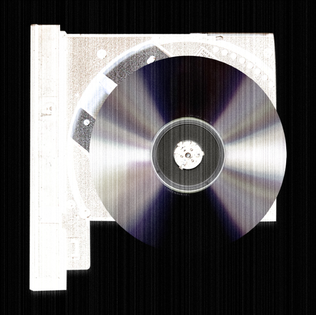
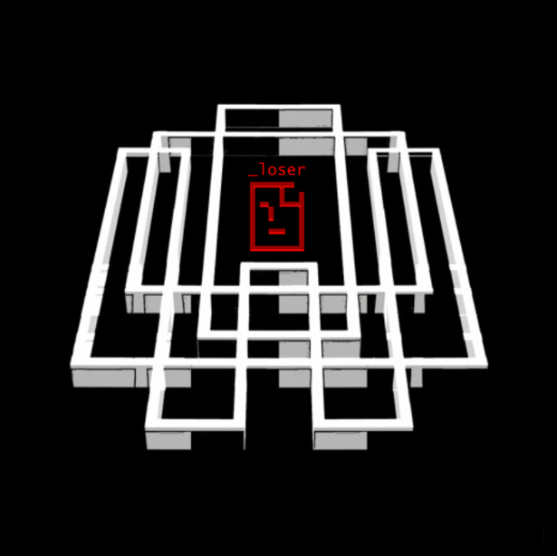
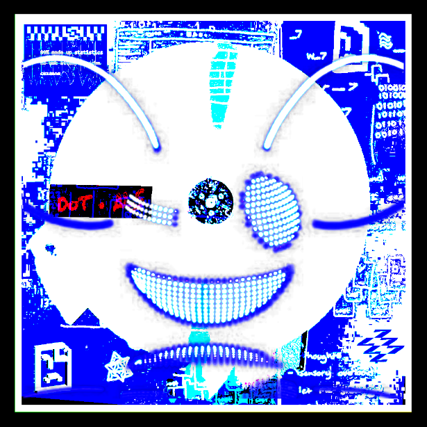
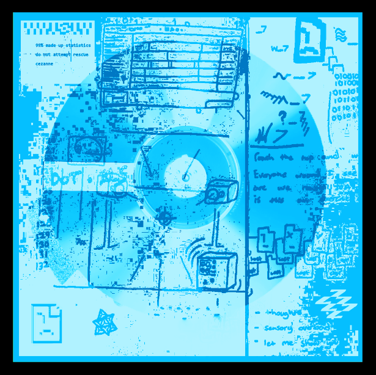
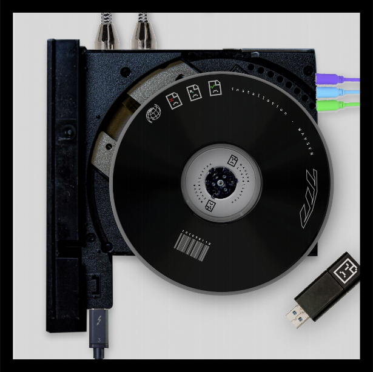
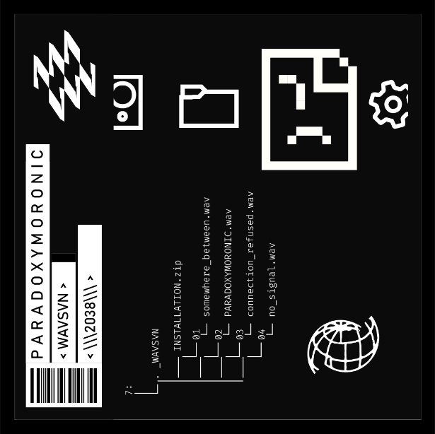
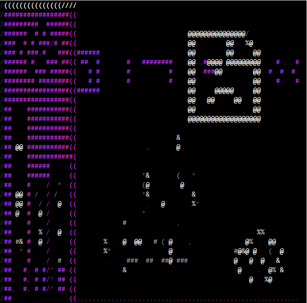
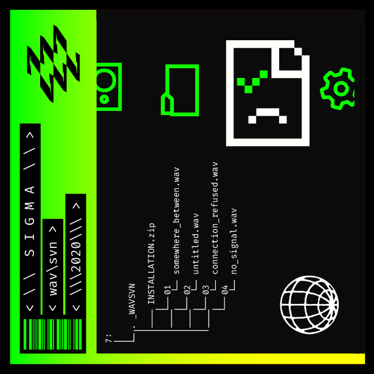

011100
100110
010101
110011
011001
010111
010000
fact check WAVSVN remix
constellation
um.serum [fact check backdoor]
fact.afterhours
sick!
sick!
found on memory
found on memory
destination:misdirection
soundtest_0

novem8er
tripping over my thoughts
818_decision
an endless staircase
99% made up statistics
do not attempt rescue
Bluescreen
aliasing

bluescreen
navigate
An Exercise In Falling
extra cable in the box
paradoxymoronic
extranormal
leap_frog
vintage altarboy
misunderstanding
upwrd + fall
INSTALLATION
connection refused

signal in the noise
no_signal
somewhere_between
signal